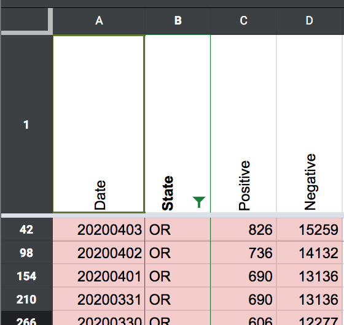
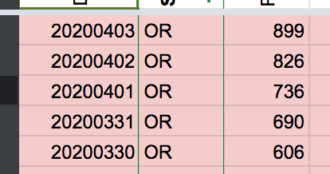

Problems with Oregon data?
Saw this on Twitter: https://twitter.com/kms_sf/status/1245834999376445440.
I looked into the screenshots for 3/29 - 4/2. All the numbers look correct except for some sampling issues on 3/30 - 4/1. I don’t think there are any corrections to be made but happy to have a second pair of eyes on the data.
hammer added the label Data quality on April 3, 2020 at 10:53 am
careeningspace closed the issue on April 11, 2020 at 9:18 pm
Before 
After 
I re-checked the screenshots and found that two dates had the same number. I fixed in States Daily. Screenshots above.